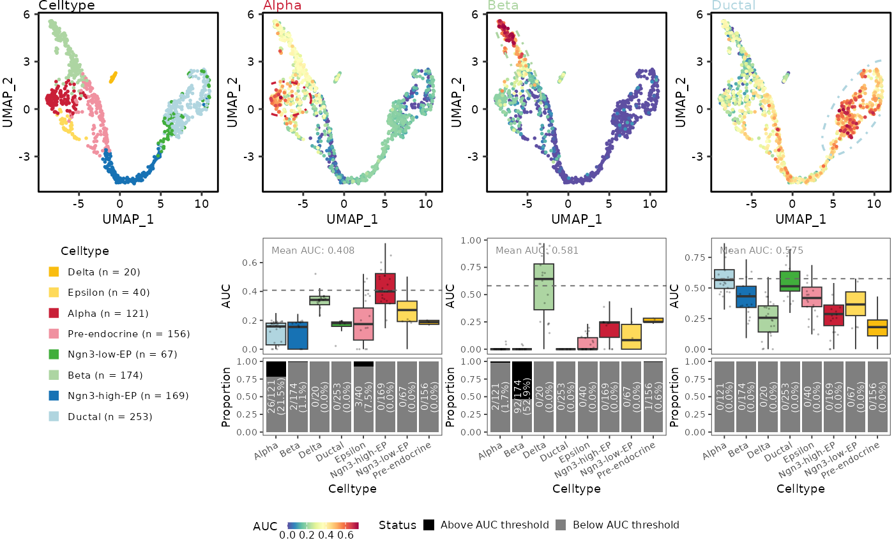

Plot CellScoring results from a Seurat object
Usage
CellScoringPlot(
srt,
method = "AUCell",
features = NULL,
scores = NULL,
group.by = NULL,
reduction = NULL,
dims = c(1, 2),
cells = NULL,
thresholds = NULL,
add_box = TRUE,
add_bar = TRUE,
bar.text.size = 2,
bar.text.color = "white",
box.text.size = 2,
box.text.color = "grey50",
ncol = NULL,
nrow = NULL,
row.heights = c(1, 1),
point.size = NULL,
raster = NULL,
raster.dpi = 512,
point.fraction = 0.1,
point.alpha = 0.2,
boxplot.y.range = TRUE,
group.palette = "Chinese",
group.palcolor = NULL,
score.palette = "Spectral",
score.palcolor = NULL,
theme_use = "theme_scop",
auc_theme_use = "theme_scop",
highlight.label = FALSE,
highlight.mark.type = c("ellipse", "hull"),
highlight.mark.color = NULL,
highlight.label.color = "grey40",
highlight.mean.color = NULL,
highlight.color = NULL,
ellipse.level = 0.98,
show.score.legend = TRUE,
legend.position = "bottom",
group.title = NULL,
threshold.colors = c(`Above AUC threshold` = "black", `Below AUC threshold` = "grey50"),
...,
combine = TRUE,
seed = 42,
verbose = TRUE
)Arguments
- srt
A `Seurat` object.
- method
Cell-scoring method to retrieve and label. Accepts the same values as the `method` argument of [CellScoring()].
- features
Score names to plot. For metadata input these are metadata columns; for `scores` input these are matrix row or column names. A named character vector uses its names as display labels. When both `features` and `scores` are `NULL`, the most recent available result for `method` recorded by [CellScoring()] is used. Older AUCell objects fall back to numeric metadata.
- scores
Optional score matrix or data frame, with features by cells or cells by features. When `NULL`, scores are read from `srt` metadata or the matching [CellScoring()] record.
- group.by
Metadata column used for cell groups. `NULL` uses active Seurat identities.
- reduction
Reduction to plot.
NULLuses DefaultReduction.- dims
Length-2 vector of dimensions to plot.
- cells
Cell names to include.
- thresholds
Optional score thresholds. Supply one value per feature, a named vector keyed by display or source feature name, or `"auto"` to infer thresholds for AUCell scores. When `NULL`, `add_bar = TRUE`, and `method = "AUCell"`, automatic thresholds are used.
- add_box
Add the score boxplot.
- add_bar
Add the threshold-proportion bar chart. Defaults to `TRUE`. Without explicit `thresholds`, thresholds are inferred automatically only for AUCell. Other methods require explicit thresholds or `add_bar = FALSE`.
- bar.text.size
Text size for counts and percentages inside threshold bars.
- bar.text.color
Text color for counts and percentages inside threshold bars.
- box.text.size
Text size for the mean-score label in boxplots.
- box.text.color
Text color for the mean-score label in boxplots.
- ncol
Number of physical columns. `NULL` uses one column per group or feature slot when `nrow` is also `NULL`, or the minimum required by `nrow`.
- nrow
Number of physical rows. Rows occur in UMAP/statistic pairs and must therefore be even. `NULL` chooses the minimum required value.
- row.heights
Relative heights of the UMAP and statistic rows within each row pair. Use `c(0.47, 0.53)` for the compact benchmark layout.
- point.size
Point size in rasterized UMAPs. `NULL` lets [CellDimPlot()] choose a readable size from the number of plotted cells.
- raster, raster.dpi
Rasterize points.
raster = NULLrasterizes when there are more than 100,000 cells.- point.fraction
Fraction of cells shown as jittered points in each boxplot. Boxplot statistics always use all cells.
- point.alpha
Alpha for jittered points.
- boxplot.y.range
If `TRUE`, use the reference boxplot y-axis range of 0–0.5 when it contains all scores; otherwise use the score range.
- group.palette, group.palcolor
Group color palette arguments passed to [thisplot::palette_colors()].
- score.palette, score.palcolor
Continuous score palette name and optional custom colors, resolved with [thisplot::palette_colors()]. The default `"Spectral"` matches other continuous feature plots in scop.
- theme_use
Theme used by [CellDimPlot()] for the main group UMAP.
- auc_theme_use
Theme used by [CellDimPlot()] for AUC UMAPs.
- highlight.label
Whether to label highlighted groups on score UMAPs. The highlighted group is inferred from each feature's source name, falling back to its display label. Defaults to `FALSE`; outlines are still drawn.
- highlight.mark.type
Highlight outline geometry. `"ellipse"` draws a confidence ellipse; `"hull"` follows the selected cells more closely with [ggforce::geom_mark_hull()].
- highlight.mark.color
Color of highlighted group outlines. `NULL` inherits the matching group colors, consistent with [CellDimPlot()].
- highlight.label.color
Highlight label color; defaults to grey.
- highlight.mean.color
Mean-score line color. `NULL` inherits `highlight.label.color`. The mean-score label text is styled with `box.text.size` and `box.text.color`.
- highlight.color
Compatibility shortcut that sets all highlight colors when their newer arguments are not supplied.
- ellipse.level
Confidence level for highlighted group ellipses.
- show.score.legend
Which score UMAPs show a continuous legend: `TRUE` shows the first, `FALSE` shows none, or supply feature names.
- legend.position
Position of collected score and threshold legends. Legends are horizontal at `"top"` or `"bottom"`, and vertical at `"left"` or `"right"`.
- group.title
Optional group legend title.
- threshold.colors
Colors for cells above and below each threshold.
- ...
Additional arguments forwarded to [CellDimPlot()].
- combine
Return a patchwork when `TRUE`; otherwise return named plot components before layout spacers are inserted.
- seed
Seed used for automatic threshold inference and jitter-point sampling.
- verbose
Whether to report plotting progress.
Value
A `patchwork` object, or a named list of `ggplot`/`patchwork` components when `combine = FALSE`.
Examples
data(pancreas_sub)
pancreas_sub <- RunStandardWorkflow(pancreas_sub, verbose = FALSE)
#> ℹ [2026-09-05 15:45:25] Skip `log1p()` because `layer = data` is not "counts"
reduction <- DefaultReduction(pancreas_sub)
SeuratObject::Key(pancreas_sub[[reduction]]) <- "UMAP_"
genesets <- list(
Alpha = c("Gcg", "Ttr", "Mafb", "Arx", "Slc7a2"),
Beta = c("Ins1", "Ins2", "Iapp", "Pdx1"),
Ductal = c("Krt19", "Krt8", "Krt18", "Sox9", "Krt7")
)
pancreas_sub <- CellScoring(
pancreas_sub,
features = genesets,
method = "AUCell",
classification = FALSE
)
#> ℹ [2026-09-05 15:45:32] Start cell scoring
#> ℹ [2026-09-05 15:45:33] Data type is log-normalized
#> ℹ [2026-09-05 15:45:33] Number of feature lists to be scored: 3
#> ✔ [2026-09-05 15:45:33] Cell scoring completed
CellScoringPlot(
pancreas_sub,
method = "AUCell",
group.by = "SubCellType"
)
#> ℹ [2026-09-05 15:45:33] Using the latest AUCell result recorded by `CellScoring()`
#> ℹ [2026-09-05 15:45:34] Plotting AUCell feature "Alpha"
#> ℹ [2026-09-05 15:45:34] Plotting AUCell feature "Beta"
#> ℹ [2026-09-05 15:45:34] Plotting AUCell feature "Ductal"
